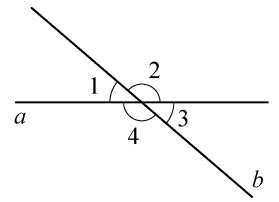
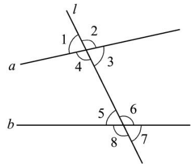
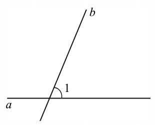
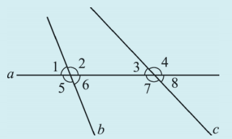
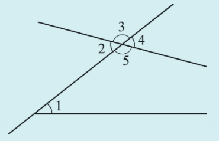
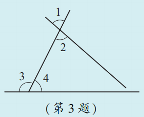

我们知道，两条直线相交，可以得到四个角。如图4.1.11，直线 \(a, b\) 相交，得到 \(\angle 1, \angle 2, \angle 3, \angle 4\)。在这些角中，有的是对顶角（相等），有的是邻补角（互补）。

试分别指出相等的角和互补的角。
相等的角：\(\angle 1 = \angle 3\)，\(\angle 2 = \angle 4\)（对顶角相等）。
互补的角：\(\angle 1 + \angle 2 = 180^\circ\)，\(\angle 2 + \angle 3 = 180^\circ\)，\(\angle 3 + \angle 4 = 180^\circ\)，\(\angle 4 + \angle 1 = 180^\circ\)（邻补角）。
在一个平面内，一条直线 \(l\) 与两条直线 \(a, b\) 分别相交于点 \(P, Q\)，这可以说成“直线 \(l\) 分别截直线 \(a, b\) 于点 \(P, Q\)”。两条直线被另一条直线所截，可得八个角。

如图4.1.12，直线 \(l\) 截直线 \(a, b\)，得到 \(\angle 1, \angle 2, \dots, \angle 8\)。从位置关系上看，这些角中有对顶角、邻补角。除此之外，还有没有其他特殊位置关系的角呢？
图4.1.12中的 \(\angle 1\) 与 \(\angle 5\) 的位置有什么关系？
从直线 \(l\) 来看，\(\angle 1\) 与 \(\angle 5\) 处于直线 \(l\) 的同一侧；从直线 \(a, b\) 来看，它们又分别在直线 \(a, b\) 的同一方。这样位置的一对角叫做同位角（corresponding angles）。
图4.1.12中，\(\angle 2\) 与 \(\angle 6\) 也是同位角。除此以外，同位角还有 \(\angle 3\) 与 \(\angle 7\)，\(\angle 4\) 与 \(\angle 8\)。
图4.1.12中的 \(\angle 3\) 与 \(\angle 5\) 的位置和同位角 \(\angle 1\) 与 \(\angle 5\) 相比，有什么一样？有什么不一样？
\(\angle 3\) 与 \(\angle 5\) 处于直线 \(l\) 的两侧，并且都在直线 \(a, b\) 之间（即内部）。这样位置的一对角叫做内错角（alternate interior angles）。
图4.1.12中，内错角还有 \(\angle 4\) 与 \(\angle 6\)。
图4.1.12中的 \(\angle 4\) 与 \(\angle 5\) 的位置和同位角、内错角相比，又有什么一样？有什么不一样？
\(\angle 4\) 与 \(\angle 5\) 处于直线 \(l\) 的同一侧，并且都在直线 \(a, b\) 之间（内部）。这样位置的一对角叫做同旁内角（interior angles on the same side）。
图4.1.12中，同旁内角还有 \(\angle 3\) 与 \(\angle 6\)。
| 角的名称 | 位置特征 | 基本图形 | 形象记忆 |
|---|---|---|---|
| 同位角 | 在截线同侧，在被截线同一方 | “F”型 | ∠1与∠5 |
| 内错角 | 在截线两侧，在被截线之间 | “Z”型 | ∠3与∠5 |
| 同旁内角 | 在截线同侧，在被截线之间 | “U”型 | ∠4与∠5 |
图4.1.13中，\(\angle 1\) 是直线 \(a, b\) 相交所成的一个角，用量角器量出 \(\angle 1\) 的度数；画一条直线 \(c\) 使直线 \(c\) 与直线 \(b\) 相交所成的角中有一个与 \(\angle 1\) 是一对同位角，且这对同位角的度数相等。

先量出 \(\angle 1\) 的度数（例如30°）。然后画直线 \(c\)，使得它与直线 \(b\) 相交构成的同位角等于 \(\angle 1\)。这可以通过平移 \(\angle 1\) 来实现。这样做是为了说明：只要保持同位角相等，就可以画出与已知直线平行的直线。
1. 如图，直线 \(a\) 截直线 \(b, c\) 所得的同位角有____对，它们是______；内错角有____对，它们是______；同旁内角有____对，它们是______。

根据图形，有4对同位角（如∠1与∠3，∠2与∠4，∠5与∠7，∠6与∠8），2对内错角（如∠2与∠7，∠3与∠6），2对同旁内角（如∠2与∠3，∠6与∠7）。
2. 如图，与 \(\angle 1\) 是同位角的是______，与 \(\angle 1\) 是内错角的是______，与 \(\angle 1\) 是同旁内角的是______。

与∠1是同位角的是∠4，与∠1是内错角的是∠2，与∠1是同旁内角的是∠5。
3. 在如图所示的4个角的位置关系中，\(\angle 1\) 与 \(\angle 2\) 是______，\(\angle 1\) 与 \(\angle 3\) 是______，\(\angle 2\) 与 \(\angle 3\) 是______，\(\angle 2\) 与 \(\angle 4\) 是______，\(\angle 3\) 与 \(\angle 4\) 是______。

∠1与∠2是对顶角，∠1与∠3是同位角，∠2与∠3是内错角，∠2与∠4是同旁内角，∠3与∠4是邻补角。
“三线八角”指的是两条直线被第三条直线所截，根据它们的位置特征，我们给这些角起了形象的名字：像“F”形的叫同位角，像“Z”形的叫内错角，像“U”形的叫同旁内角。
生活中处处可见这些角的影子：当你站在铁路道口，两条笔直的铁轨被横着的枕木所截，轨与枕之间就构成了一组组同位角；城市里的斑马线与道路边线，也常常形成内错角和同旁内角。在折纸时，每一条折痕与纸边相交，同样会产生这三类角。
学会识别这些角，不仅能帮我们看懂复杂的几何图形，更是打开平行线判定大门的钥匙——因为只要同位角相等，或者内错角相等，或者同旁内角互补，我们就能断定两条直线互相平行。
你知道这样一道数学趣题吗？“有九棵树，要栽成十行，使得每行恰好有三棵树”，这就是著名的“九树成十行”问题。
起初你可能想到一个3×3的网格（如图），但这样只能得到8行（3行、3列、2条对角线）。要得到10行，需要更巧妙的几何布局（例如利用三角形的重心、共线点等）。下面是一个3×3网格的8行示意图，红色虚线表示已有的行，缺少的两行需要额外构思。
上图显示了3×3网格中的8条线（3行、3列、2条对角线）。经典的十行解需要借助非网格的排列，例如利用帕普斯定理或西瓦定理中的共线点。感兴趣的同学可以查阅资料，探索这个经典趣题的多种解法。
分类思想： 根据角的位置关系将角分为同位角、内错角、同旁内角。
模型思想： 用“F、Z、U”型帮助记忆和识别。
抽象思想： 从复杂图形中抽象出这些基本模型。
✨ 识别角的身份，开启平行线的大门 ✨